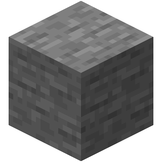

Оборудование

Варочная стойка
Основной блок, используемый для создания зелий
Котёл
Каждый котёл может быть заполнен с помощью ведра воды

Огненный порошок
Служит в качестве топлива для варочной стойки

Колба
Контейнер для зелий

Колба с водой
Стартовая основа для всех зелий
Ингредиенты

Приготовленный паучий глаз
Ключевой ингредиент для зелий слабости

Светопыль
Усиливает эффект зелий, но сокращает их длительность. Добывается в Нижнем мире.

Нарост Нижнего мира
Основа для большинства зелий. Растет только в Нижнем мире.

Редстоуновая пыль
Увеличивает длительность эффектов зелий. Добывается из редстоуновой руды.

Порох
Позволяет создавать взрывающиеся зелья. Выпадает с криперов.

Драконье дыхание
Используется для создания туманных зелий. Собирается из облака дыхания дракона Края.

Сверкающий ломтик арбуза
Основной ингредиент зелий лечения. Создается из арбуза и золотых самородков.
Огненный порошок)
Необходим для зелий силы. Получается из стержней ифритов.

Паучий глаз
Используется для зелий слабости и ядов. Выпадает с пауков.

Слеза гаста
Основной компонент зелий регенерации. Редко выпадает с гастов.

Лавовый крем
Ингредиент для зелий огнестойкости. Создается из слизи и огненного порошка.

Золотая морковь
Необходима для зелий ночного зрения. Крафтится из моркови и золотых самородков.

Иглобрюх
Используется для зелий подводного дыхания. Ловится удочкой в океане.

Кроличья лапка
Основной ингредиент зелий прыгучести. Редко выпадает с кроликов.

Мембрана фантома
Используется для зелий медленного падения. Выпадает с фантомов.

Черепаший панцирь
Необходим для зелий черепашьей мощи. Создается из черепашьих скейтов.

Камень
Необходим для зелья заражения. Переплавьте булыжник

Блок слизи
Необходим для зелья слизистости. Добывается со слизней
Паутина
Необходим для зелья плетения. Добывается в заброшенных шахтах и деревнях

Стержень вихря
Необходим для зелья ветрового заряда. Добывается с вихрей
Зелья

Грубое зелье
Основа для всех зелий с эффектами

Непримечательное зелье
Используется только для приготовления зелья слабости. Бесполезно

Густое зелье
Используется только для приготовления зелья слабости. Бесполезно

Зелье слабости
Весь урон в ближнем бою уменьшается

Зелье исцеления
Восстанавливает хп мгновенно

Зелье огнестойкости
Игрок получает иммунитет к огню и лаве

Зелье регенерации
Восстанавливает хп в течение времени

Зелье силы
Добавляет урон к атакам с оружием или с руки

Зелье стремительности
Увеличивает скорость передвижения игрока

Зелье ночного зрения
Даёт возможность очень хорошо видеть в темноте

Зелье подводного дыхания
Даёт возможность дышать под водой

Зелье медленного падения
Дает плавное падение

Зелье черепашьей мощи
Дает сопротивление урону, но замедляет игрока

Зелье прыгучести
Даёт возможность прыгать выше

Зелье отравления
Отравляет игрока в течение времени, отнимает хп и уменьшает его
здоровье до 1

Зелье невидимости
Даёт возможность стать телу игрока невидимым. На блоки, предметы,
оружие и броню (кроме конской) зелье не действует

Зелье замедления
Движения игрока замедляются

Зелье ветрового заряда
Заставляет выпускать заряды ветра после смерти

Зелье плетения
Размещает 2-3 паутины после смерти

Зелье слизистости
Заставляет призывать двух слизней средних размеров после смерти

Зелье заражения
Заставляет призывать чешуйницу при получении урона

Зелье урона
Наносит урон моментально
Достижения

Доктор для зомби
Вылечите зомби-жителя с помощью зелья слабости и золотого яблока

Местный зельевар
Приготовьте ваше первое зелье на варочной стойке

Энергетический коктейль
Получи все 17 эффектов одновременно!

Невозможное возможно!
Получи все 33 эффекта одновременно